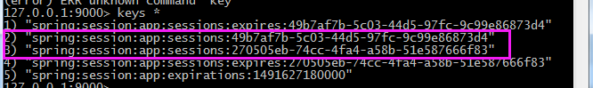
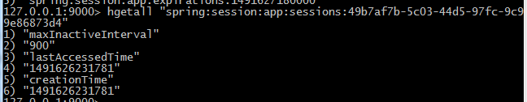
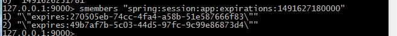

1、分布式会话管理是什么？
在Web项目开发中，会话管理是一个很重要的部分，用于存储与用户相关的数据。通常是由符合session规范的容器来负责存储管理，也就是一旦容器关闭，重启会导致会话失效。因此打造一个高可用性的系统，必须将session管理从容器中独立出来。
2、分布式会话管理的解决方案选用
实现方案有很多种，下面简单介绍下：
第一种是使用容器扩展来实现，大家比较容易接受的是通过容器插件来实现，比如基于Tomcat的tomcat-redis-session-manager，基于Jetty的jetty-session-redis等等。好处是对项目来说是透明的，无需改动代码。不过前者目前还不支持Tomcat 8，或者说不太完善。个人觉得由于过于依赖容器，一旦容器升级或者更换意味着又得从新来过。并且代码不在项目中，对开发者来说维护也是个问题。
第二种是自己写一套会话管理的工具类，包括Session管理和Cookie管理，在需要使用会话的时候都从自己的工具类中获取，而工具类后端存储可以放到Redis中。很显然这个方案灵活性最大，但开发需要一些额外的时间。并且系统中存在两套Session方案，很容易弄错而导致取不到数据。
第三种是使用框架的会话管理工具，也就是本文要说的spring-session，可以理解是替换了Servlet那一套会话管理，既不依赖容器，又不需要改动代码，并且是用了spring-data-redis那一套连接池，可以说是最完美的解决方案。当然，前提是项目要使用Spring Framework才行。
3、为什么使用Spring Session
Spring Session为企业级Java应用的session管理带来了革新，使得以下的功能更加容易实现：
- 将session所保存的状态卸载到特定的外部session存储中，如Redis或Apache Geode中，它们能够以独立于应用服务器的方式提供高质量的集群。
- 当用户使用WebSocket发送请求的时候，能够保持HttpSession处于活跃状态。
- 在非Web请求的处理代码中，能够访问session数据，比如在JMS消息的处理代码中。
- 支持每个浏览器上使用多个session，从而能够很容易地构建更加丰富的终端用户体验。
- 控制session id如何在客户端和服务器之间进行交换，这样的话就能很容易地编写Restful API，因为它可以从HTTP 头信息中获取session id，而不必再依赖于cookie。
参考：http://m.blog.csdn.net/article/details?id=51483471
4、Spring Session分布式会话解决方案
web.xml配置：
<filter>
<filter-name>springSessionRepositoryFilter</filter-name>
<filter-class>org.springframework.web.filter.DelegatingFilterProxy</filter-class>
</filter>
<filter-mapping>
<filter-name>springSessionRepositoryFilter</filter-name>
<url-pattern>/*</url-pattern>
</filter-mapping> 编写配置，注解@EnableRedisHttpSession通过Import，引入了RedisHttpSessionConfiguration配置类。该配置类通过@Bean注解，向Spring容器中注册了一个SessionRepositoryFilter（SessionRepositoryFilter的依赖关系：SessionRepositoryFilter --> SessionRepository --> RedisTemplate --> RedisConnectionFactory）。
import org.springframework.context.annotation.Bean;
import org.springframework.data.redis.connection.RedisConnectionFactory;
import org.springframework.data.redis.connection.jedis.JedisConnectionFactory;
import org.springframework.session.data.redis.config.annotation.web.http.EnableRedisHttpSession;
@EnableRedisHttpSession(maxInactiveIntervalInSeconds = 1800)
public class RedisHttpSessionConfig {
@Bean
public RedisConnectionFactory connectionFactory() {
JedisConnectionFactory connectionFactory = new JedisConnectionFactory();
connectionFactory.setPort(6379);
connectionFactory.setHostName("127.0.0.1");
return connectionFactory;
}
} 更复杂的Java Confg，需要加入spring 容器。
package io.flysium.framework.session;
import org.springframework.context.ApplicationEventPublisher;
import org.springframework.context.annotation.Bean;
import org.springframework.context.annotation.Configuration;
import org.springframework.data.redis.connection.RedisConnectionFactory;
import org.springframework.data.redis.connection.jedis.JedisConnectionFactory;
import org.springframework.data.redis.core.RedisOperations;
import org.springframework.data.redis.serializer.JdkSerializationRedisSerializer;
import org.springframework.data.redis.serializer.RedisSerializer;
import org.springframework.scheduling.annotation.EnableScheduling;
import org.springframework.session.data.redis.RedisFlushMode;
import org.springframework.session.data.redis.RedisOperationsSessionRepository;
import org.springframework.session.data.redis.config.annotation.web.http.RedisHttpSessionConfiguration;
import org.springframework.session.web.http.CookieSerializer;
import org.springframework.session.web.http.DefaultCookieSerializer;
/**
* Spring Session分布式会话解决方案
*
* @author SvenAugustus(蔡政滦) e-mail: SvenAugustus@outlook.com
* @version 1.0
*/
@Configuration
@EnableScheduling
public class RedisHttpSessionConfig extends RedisHttpSessionConfiguration {
/**
* Spring Data Redis 的连接工厂配置，必选
*/
@Bean(name = "connectionFactory")
public RedisConnectionFactory connectionFactory() {
JedisConnectionFactory connectionFactory = new JedisConnectionFactory();
connectionFactory.setPort(6379);
connectionFactory.setHostName("127.0.0.1");
return connectionFactory;
}
/**
* Spring Data Redis 的会话存储仓库配置，可选
*/
@Bean(name = "sessionRepository")
public RedisOperationsSessionRepository sessionRepository(
RedisOperations<Object, Object> sessionRedisTemplate,
ApplicationEventPublisher applicationEventPublisher) {
this.setMaxInactiveIntervalInSeconds(Integer.valueOf(900)); // 单位：秒
this.setRedisNamespace(getApplicationName());
this.setRedisFlushMode(RedisFlushMode.ON_SAVE);
return super.sessionRepository(sessionRedisTemplate, applicationEventPublisher);
}
/**
* Spring Data Redis 的默认序列化工具，可选
*/
@Bean(name = "springSessionDefaultRedisSerializer")
public RedisSerializer springSessionDefaultRedisSerializer() {
RedisSerializer defaultSerializer = new JdkSerializationRedisSerializer();
//RedisSerializer defaultSerializer = new FastJsonStringRedisSeriaziler(
// Charset.forName("utf-8"));
return defaultSerializer;
}
/**
* Session会话策略配置，可选
*
* 1、Spring Session 默认支持Cookie存储当前session的id，
* 即CookieHttpSessionStrategy。
* 2、Spring Session 支持RESTFul APIS，响应头回返回x-auth-token，来标识当前session的token，
* 即HeaderHttpSessionStrategy。
*/
/*@Bean(name = "httpSessionStrategy")
public HttpSessionStrategy httpSessionStrategy() {
HeaderHttpSessionStrategy headerHttpSessionStrategy = new HeaderHttpSessionStrategy();
headerHttpSessionStrategy.setHeaderName("Auth-Token");
return headerHttpSessionStrategy;
}*/
/**
* Session会话策略为 CookieHttpSessionStrategy 情况下配置的 Cookie序列化工具，可选
*/
@Bean(name = "cookieSerializer")
public CookieSerializer cookieSerializer() {
DefaultCookieSerializer cookieSerializer = new DefaultCookieSerializer();
// Cookie名称
cookieSerializer.setCookieName(
new StringBuilder(getApplicationName()).append("SESSION").toString());
// HttpOnly
cookieSerializer.setUseHttpOnlyCookie(true);
// HTTPS定义
//cookieSerializer.setUseSecureCookie(true);
// 解决子域问题：把cookiePath的返回值设置为统一的根路径就能让session id从根域获取，
//这样同根下的所有web应用就可以轻松实现单点登录共享session
cookieSerializer.setCookiePath("/");
return cookieSerializer;
}
private String getApplicationName() {
return "app";
}
}
5、如何查看session数据？
（1）Http Session数据（spring:session:命名空间:sessions:xxxx）在Redis中是以Hash结构存储的。


（2）Http Session过期数据（spring:session:命名空间:expirations:xxxx）以Set结构保存的。
记录了所有session数据应该被删除的时间（即最新的一个session数据过期的时间）。

6、Spring Session原理讲解
所有的request都会经过SessionRepositoryFilter，而 SessionRepositoryFilter是一个优先级最高的javax.servlet.Filter，它使用了一个SessionRepositoryRequestWrapper类接管了Http Session的创建和管理工作。
public class SessionRepositoryRequestWrapper extends HttpServletRequestWrapper {
public SessionRepositoryRequestWrapper(HttpServletRequest original) {
super(original);
}
public HttpSession getSession() {
return getSession(true);
}
public HttpSession getSession(boolean createNew) {
// create an HttpSession implementation from Spring Session
}
// ... other methods delegate to the original HttpServletRequest ...
}